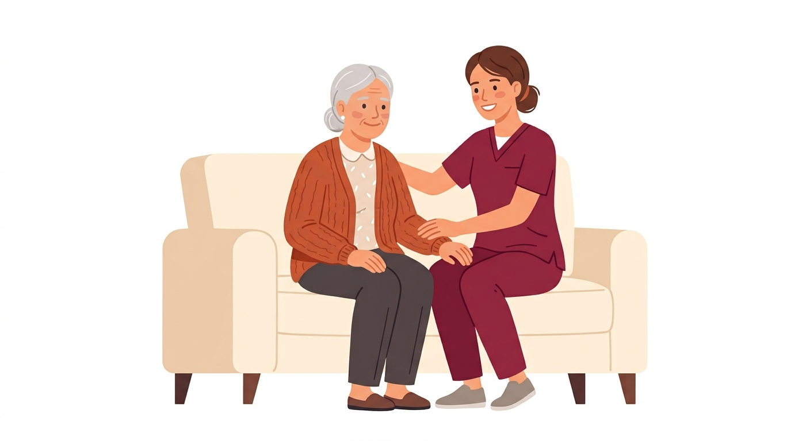
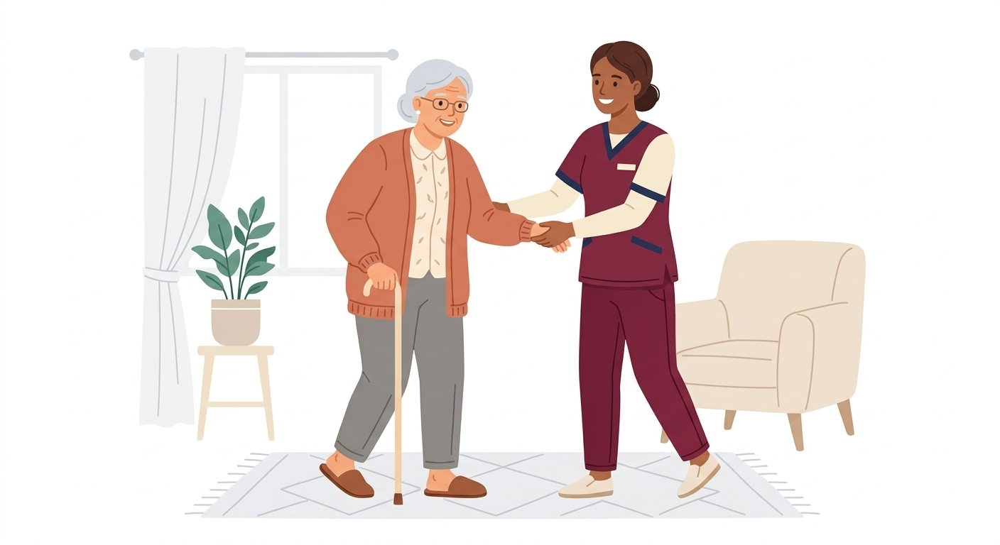
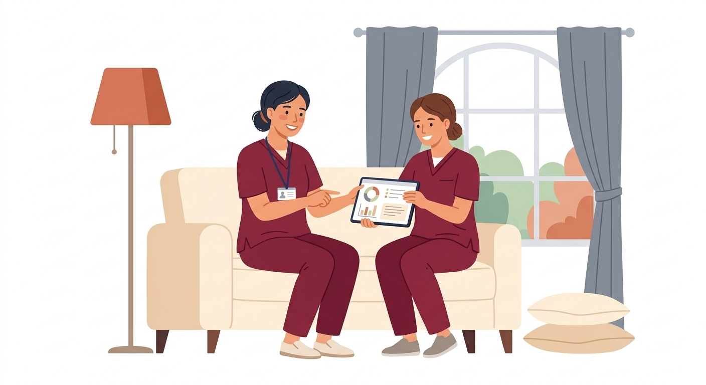
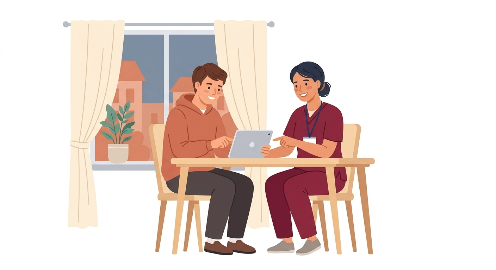
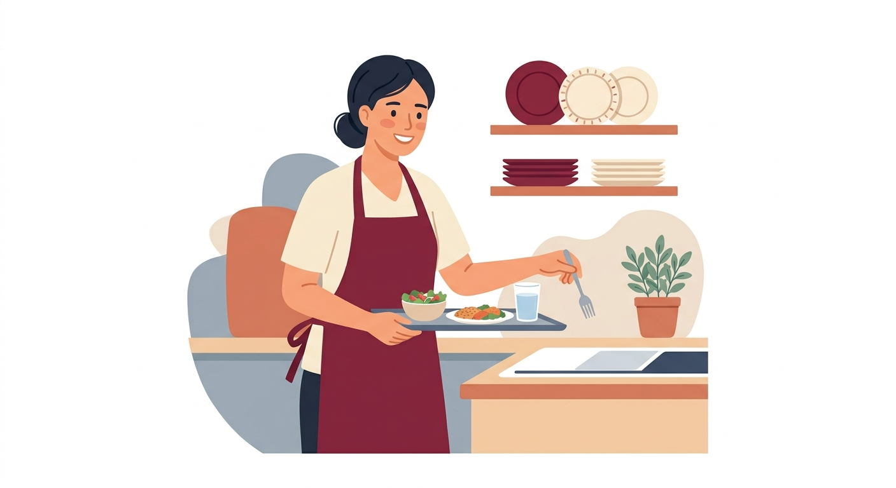

From our Hull office, Nuvora Care connects nursing homes, residential care settings, and supported living providers with fully vetted nurses and carers—day or night.
Request Shift Cover Join Our Team
Round-the-clock on-call rota support
Enhanced DBS & NMC PIN checked
Emergency & planned shift cover
Cover unexpected sickness, annual leave, or long-term block bookings with vetted RGNs, RMNs, HCAs, and Support Workers.
Request Shift CoverJoin Nuvora Care for competitive weekly pay, flexible day or night shifts, and supportive local coordination in Hull and beyond.
Apply to Join Our TeamEvery candidate is vetted for compliance, experience, and genuine compassion.
NMC-registered nurses for nursing homes and clinical care settings, delivering skilled medication rounds and calm ward leadership.

Warm, attentive carers supporting residents with personal care, safe mobility, mealtimes, and reassuring daily companionship.

Experienced shift leaders who bring confidence, uphold care plans, and guide junior staff on busy shifts.

Person-centred specialists empowering adults with learning disabilities, autism, or mental health needs to live independently.

Reliable catering and housekeeping help trained in food hygiene to keep dining rooms welcoming and hygienic.
Consistent staffing, clear communication, and people we would trust with our own families.
Speak directly with a Hull-based coordinator who listens and understands care rotas.
We interview for warmth, patience, and natural rapport alongside clinical qualifications.
Enhanced DBS, right-to-work, references, and mandatory training are verified upfront.
Our booking desk covers early shifts, long days, waking nights, and weekends.
Fast turnaround for unexpected sickness cover or advance block bookings.
We prioritise sending the same trusted staff back to your service for resident continuity.
Our 24/7 on-call desk responds immediately to short-notice sickness or emergency rota gaps across Hull, East Yorkshire, and surrounding areas.